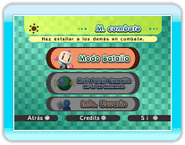

Sujeta el mando de Wii de lado y pulsa para que aparezca la pantalla inicial. Pulsa de nuevo para que aparezca la pantalla M. combate.
Selecciona uno de los tres menús para pasar a un juego.
Modo Batalla
Hasta 8 personas pueden usar 4 mandos de Wii y 4 Mandos de Nintendo GameCube a la vez.
Modo Batalla
Conexión Wi-Fi
de Nintendo
Libra batallas con la "Conexión Wi-Fi de Nintendo". Pueden combatir a la vez un máximo de 8 jugadores, con 4 jugadores por cada consola Wii.
* Para Batallas Conexión Wi-Fi de Nintendo hay que registrarse en "Información de usuario".
Info. usuario
Una vez registrado, puedes jugar Batallas Conexión Wi-Fi de Nintendo, registrar Miis, consultar récords, etc.
Credits
Ver los nombres de los creadores de Bomberman Blast.
Sobre Miis
Puedes usar Miis del Canal Mii en Bomberman Blast como sigue:
Registra Miis de tu consola Wii como usuarios, y úsalos en una batalla normal. Los Miis no pueden registrarse hasta que no juegues todas las fases de combate.

 para que aparezca la pantalla inicial. Pulsa
para que aparezca la pantalla inicial. Pulsa